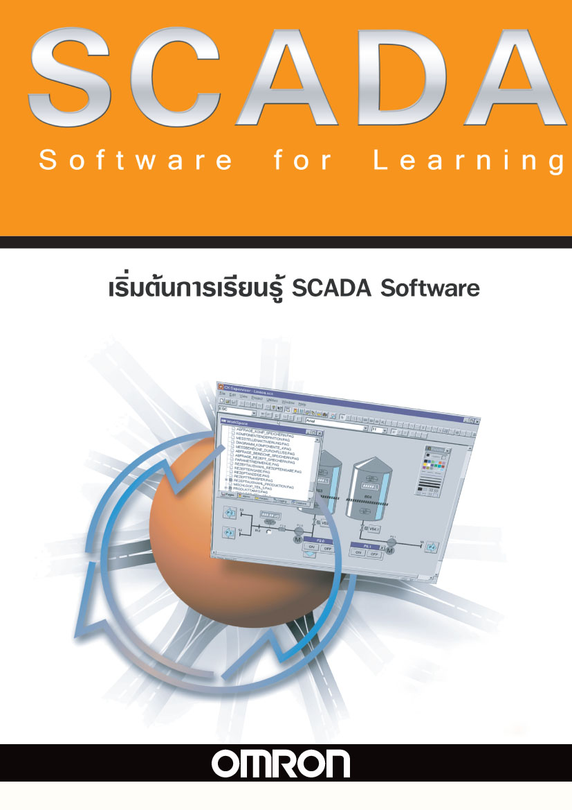
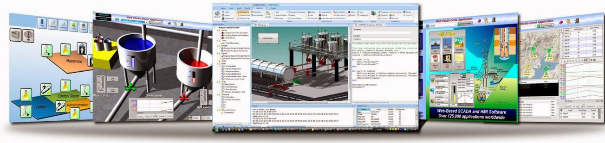
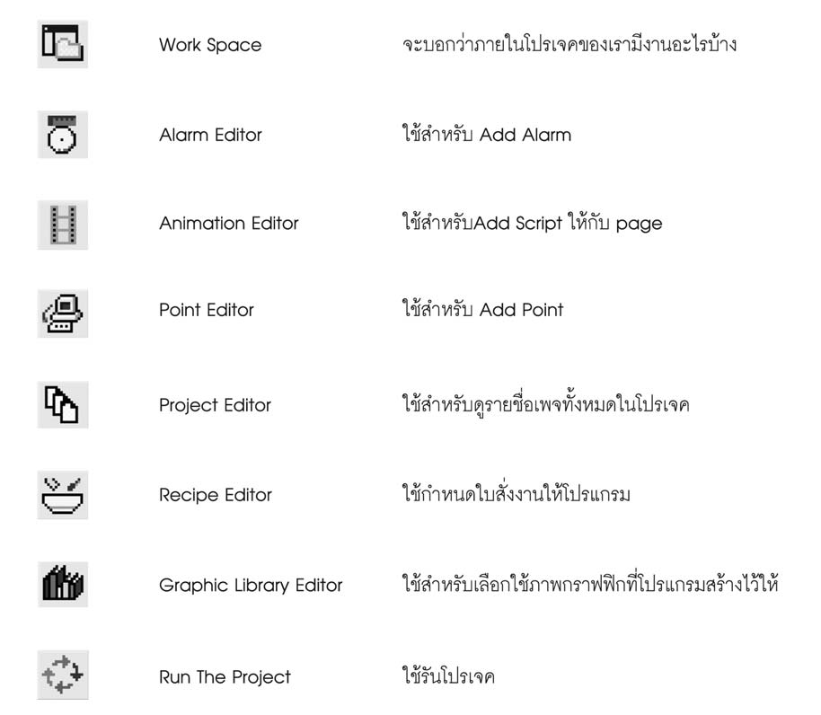
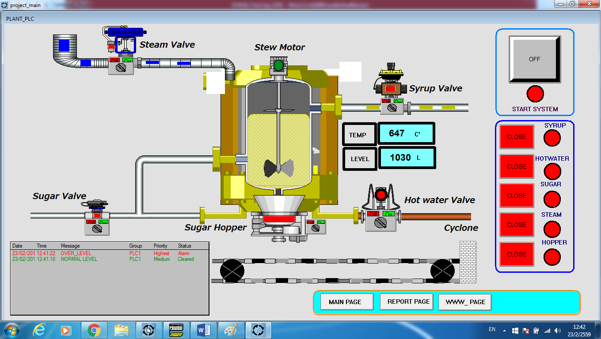
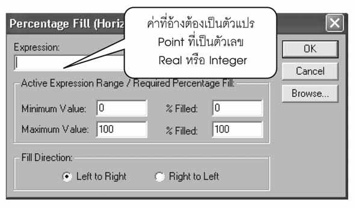
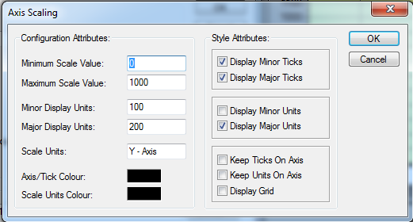

SCADA ด้วย Omron CX-Supervisor
จาก HMI หน้าเดียวไปสู่ SCADA ที่ มองทั้งโรงงาน — บทนี้แนะนำ Concept SCADA, เปรียบเทียบกับ HMI, และพาเริ่มต้นใช้ CX-Supervisor เพื่อทำ Visualization บน PC ที่เชื่อมกับ CP1L (และอุปกรณ์อื่น) ผ่าน Modbus / FINS / OPC


SCADA vs HMI — ต่างกันยังไง
| HMI | SCADA | |
|---|---|---|
| Hardware | กล่องสำเร็จรูป + Touch Screen | Software รันบน Windows PC |
| หน้าจอ | 1 เครื่อง, 1 ตู้ | Multi-screen + Multi-station |
| จำนวน Tag | หลักร้อย | หลักหมื่น–แสน |
| การเชื่อมต่อ | 1-2 PLC | หลาย PLC + Database + Web |
| Trend / History | ระยะสั้น (จำกัด SD card) | เก็บนาน, ต่อ SQL DB ได้ |
| Alarm / Event | Popup | + Email / SMS / Database log |
| Scripting | จำกัด (Macro) | VBScript / Python / Recipe |
| ตัวอย่างสินค้า | Samkoon SK-070FS, Weintek MT8071, Pro-face | CX-Supervisor, FactoryTalk, Wonderware, Ignition |
| ราคา | ~5,000–30,000 บาท/ตัว | License ~50,000+ บาท (ต่อ runtime) |
· มี PLC หลายตัวที่ต้องมองพร้อมกัน
· ต้องการเก็บ Production Data ลง Database
· มี Operator ดูจากห้อง Control Room แยกออกจากเครื่อง
· ต้องการ KPI / Reporting / Email Alarms
CX-Supervisor — รุ่นและ License
| License | Tag limit | ราคาประมาณ | เหมาะกับ |
|---|---|---|---|
| CX-Supervisor Lite | 500 tags | ~50,000 บาท | เครื่องจักรขนาดเล็ก, lab |
| CX-Supervisor Plus (Machine Edition) | 2,000 tags | ~100,000 บาท | เครื่องจักรขนาดกลาง |
| CX-Supervisor Pro | Unlimited | ~250,000 บาท | SCADA ทั้งโรงงาน |
| CX-Supervisor Developer Trial | 2 ชั่วโมง runtime | ฟรี | เรียนรู้และทำ Lab |
Editor Toolbar ของ CX-Supervisor

📁 Work Space — แสดงรายการทุกอย่างใน Project
🔔 Alarm Editor — เพิ่ม/แก้ Alarm
🎬 Animation Editor — Add Script ให้ Page
📍 Point Editor — เพิ่ม Tag (Point) ที่เชื่อมกับ PLC
📄 Project Editor — ดูรายชื่อ Page ทั้งหมด
🍲 Recipe Editor — กำหนดสูตรการผลิต
📚 Graphic Library Editor — เลือก Symbol สำเร็จรูป
▶️ Run The Project — เริ่มรัน SCADA
เริ่มสร้าง Project ใน CX-Supervisor
-
เปิด CX-Supervisor Developer
Start → CX-Supervisor → CX-Supervisor Developer— ตัว Developer ใช้สำหรับสร้าง ส่วน Runtime คือตัวรันโปรเจคที่ทำเสร็จแล้ว -
สร้าง Project ใหม่
File → New Project→ ตั้งชื่อ → เลือกโฟลเดอร์เก็บ → กด OK -
เพิ่ม PLC Connection
Project → Add PLC→- PLC Type: CP1L
- Network: FinsEthernet หรือ FinsGateway (สำหรับ USB/Serial)
- IP Address:
192.168.250.1(IP ของ PLC) - Node Number: 1
- กด Test Connection ต้องได้ "Connection OK" — ถ้าไม่ได้ ตรวจ IP / Firewall / สาย LAN ก่อน
-
สร้าง Points (Tags)
Project → Points→ เพิ่ม Point ใหม่ →- Name:
Pump_Run - Type: Boolean
- I/O Source: PLC ที่เพิ่มไว้
- Address:
100.00(= Y0 ของ PLC)
- Name:
🏷️ ลองเชื่อม Tag → PLC Address
ลองดูว่าตัวแปรในระบบจริงควรไปวางที่ Address ไหนของ CP1L · ลากแต่ละชิ้นไปหา address ที่ถูกต้อง (ใส่ Boolean ใน CIO bit, Word ใน DM):
การออกแบบหน้าจอ (Mimic)
Mimic = หน้าจอ Process Visualization ของ SCADA — ใช้ Drag-Drop วาง object แล้ว link กับ Points:


-
สร้าง Page
Project → Add Page → Main -
วาง Object พื้นฐาน
Toolbox มี:
- Rectangle, Line, Polygon — สำหรับวาด Process Diagram (ท่อ, ถัง, มอเตอร์)
- Button — Toggle Bit / Push command
- Numeric Display — แสดงค่าตัวเลข
- Text Display — แสดงข้อความสถานะ
- Bar Graph / Trend — Visualization ค่าตามเวลา
- Library Symbol — มอเตอร์, วาล์ว, ท่อ, ถัง — สำเร็จรูป
-
Link Object กับ Point
คลิกขวา → Properties → Animations tab → เลือก:
- Visible / Hidden — แสดงเมื่อ Bit ON/OFF
- Color Change — เปลี่ยนสีตามสถานะ
- Movement / Rotation — เคลื่อนที่ตามค่า (เช่น Pointer)
- Text/Value Update — เปลี่ยนข้อความหรือตัวเลขตาม Point
การทำ Trend Chart
- วาง Trend Object Toolbox → Trend → ลากวางใน Page
-
เพิ่ม Pens (เส้นกราฟ)
คลิกขวาที่ Trend → Properties → Pens tab → Add:
- Point:
Temperature_PV - Color: แดง
- Min/Max: 0 – 100°C
- Point:
- ตั้ง Sampling Properties → General tab → Sample interval = 1 วินาที, History buffer = 1 hour

Alarms
-
กำหนด Alarm Point
Project → Points → เลือก Point → Alarms tab → Add:
- Type: High (เกิดเมื่อค่าเกิน), Low, Equal
- Limit: 80 (เช่น Temperature High Alarm)
- Priority: 1-15
- Message: "Temperature exceeded 80°C"
- เพิ่ม Alarm Display ใน Page → ลาก Alarm Summary object → จะ list alarms ที่กำลัง active
- Acknowledge Operator คลิกที่ Alarm → กด Acknowledge → Alarm ย้ายไป "Acknowledged" list (แต่ยังคง active จนเงื่อนไขกลับ normal)
Scripting (VBScript)
CX-Supervisor รองรับ VBScript สำหรับ Logic ที่ Mimic ทำไม่ได้:
' ตรวจสอบทุก 1 วินาที ถ้า Temperature > 90 → ดับ Pump
Sub Page1_OnTick()
If Temperature_PV.Value > 90 Then
Pump_Run.Value = 0
Application.LogEvent "Auto-stop: Temp too high"
End If
End Sub
' เมื่อกดปุ่ม Start
Sub btnStart_OnClick()
If Door_Closed.Value = 1 And Emergency_OK.Value = 1 Then
Pump_Run.Value = 1
Else
MsgBox "Safety condition not met!"
End If
End SubRecipe (สูตรการผลิต)
SCADA ให้ Operator เลือก Recipe แล้วโหลดทุกค่า Setpoint ลง PLC พร้อมกัน:
-
สร้าง Recipe Group
Project → Add → Recipe— ตั้งชื่อ "Production_Recipes" -
กำหนด Fields
Temperature_SP(Number)Pressure_SP(Number)Speed_SP(Number)Duration(Number)
- เพิ่ม Recipes เพิ่มแถว: "Product_A" (Temp=60, Pressure=2.5, Speed=1500), "Product_B" (Temp=80, ...) ฯลฯ
-
Load Recipe จากปุ่ม
Button → Script:
RecipeLoad "Production_Recipes", "Product_A"— ค่าทั้งหมดจะไปอยู่ใน Points ที่ map ไว้ → ส่งเข้า PLC ทันที
Architecture ตัวอย่างของระบบ Lab
PC (Windows)
CX-Supervisor Runtime
- Mimic Pages
- Trend / Alarm
- Recipe Database
- Operator Login
PLC + Field
CP1L-EM30DT-D · Ethernet
- Modbus RTU Master
- → Inverter + E5CC + …
SQL Database (optional)
← เก็บ Trend log · Production records · Alarm history
SCADA ทางเลือก — สำรวจตลาด 2026
| SCADA | ผู้ผลิต | เด่นที่ |
|---|---|---|
| CX-Supervisor | Omron | ใช้คู่ Omron PLC ได้สนิทที่สุด (Native FINS) |
| Sysmac Studio HMI | Omron | สำหรับ NJ/NX — ใช้ NA-series HMI |
| FactoryTalk View SE | Rockwell | คู่ Allen-Bradley PLC |
| Wonderware (AVEVA) InTouch | AVEVA | ตัวเก่าแก่ที่นิยม โรงงานใหญ่ |
| Inductive Automation Ignition | Inductive Automation | License แบบ Server (จ่ายครั้งเดียว) · MQTT-friendly · Modern Web-based — กำลังร้อนแรงในไทย |
| WinCC (Siemens) | Siemens | สำหรับ Siemens PLC |
| Node-RED / Grafana (Open Source) | Community | ฟรี — เหมาะกับ Hobbyist และต้นแบบ |
สรุปบทนี้
- SCADA = HMI ที่ขนาดใหญ่กว่า + รัน Windows + เก็บข้อมูล + Multi-station
- Omron CX-Supervisor ยังเป็นทางเลือกที่ถูกที่สุดสำหรับงานที่มี Omron PLC อยู่แล้ว
- 3 องค์ประกอบหลัก: Points (Tags) + Pages (Mimics) + Scripts (Logic)
- ฟีเจอร์เพิ่มเติม: Trend / Alarm / Recipe / Database / Email
- ในตลาด 2026 — ถ้าจะลงทุนเรียน SCADA อีก 1 ตัว → ลอง Ignition (modern, MQTT, Web)
เอกสารอ้างอิงสำหรับบทนี้
- หนังสือ CX-SUPERVISOR (ภาษาไทย, 2009)
- SCADA Training 2559 (อ. ผดุง)
- การประยุกต์ใช้ SCADA ในอุตสาหกรรม (เล่ม 1)
- การประยุกต์ใช้ SCADA ในอุตสาหกรรม (เล่ม 2)
- การประยุกต์ใช้ SCADA ในอุตสาหกรรม (เล่ม 3)
ถัดไป — ลงมือทำ SCADA จริง
บทนี้ปูพื้นความเข้าใจเรื่อง SCADA Concept ครบแล้ว — ขั้นต่อไปคือ Workshop: O07 — SCADA Workshop ที่จะให้คุณ ลงมือสร้าง SCADA จริง 3 Step ติด: หลอดกะพริบ → ระบบเติมน้ำ → โรงงานช็อกโกแลต (Capstone) — มีทั้ง Browser Sim ให้กดเล่น และ CX-Supervisor Lab Handout